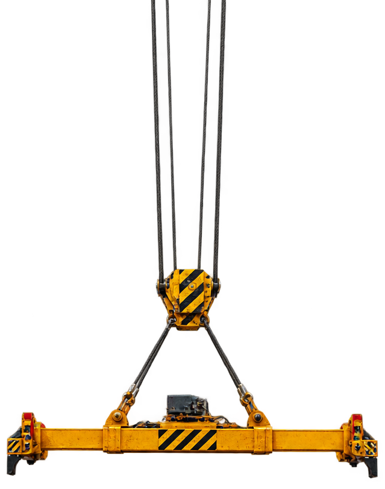
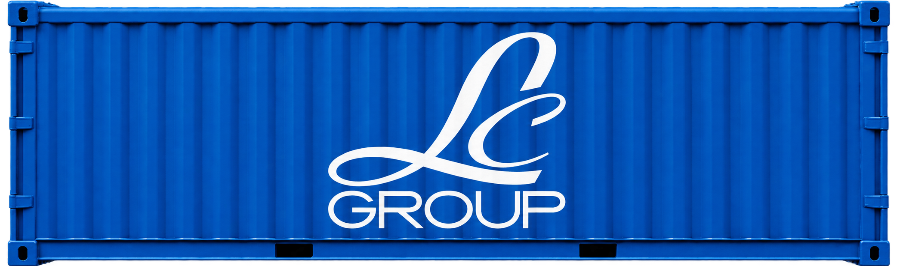
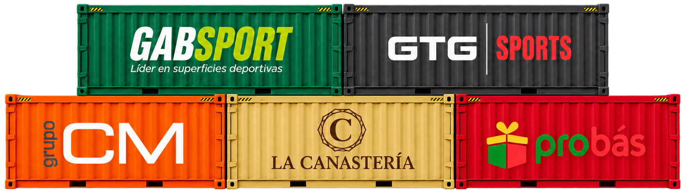

Tracking en tiempo real
Sabe dónde está tu operación.
Consulta hitos, fechas y avances sin perseguir actualizaciones.
0%
Importación sin fronteras
Soluciones logísticas y aduaneras B2B para empresas que importan al Perú sin complicaciones.
Perú · Hub de destino
Importación conectada
Tu operación visible desde el origen hasta la llegada.
HUB-WARDERTracking en tiempo real
Consulta hitos, fechas y avances sin perseguir actualizaciones.
Asistente HUB
Pregunta por estados, pendientes y próximos pasos desde el chatbot.
Centro documental
Facturas, packing list y documentos de transporte siempre disponibles.
Alertas operativas
Recibe avisos sobre cambios, vencimientos y tareas críticas.
Gestión acompañada
Nuestro equipo coordina la operación mientras tú mantienes el control.
Conecta tu operaciónTransporte marítimo
Una travesía coordinada desde la reserva hasta la descarga, con cada decisión conectada.
Validamos itinerario, naviera, documentación y ventanas operativas antes de mover tu carga.
Monitoreamos hitos y cambios para que conozcas qué ocurre y qué decisión viene después.
Coordinamos arribo, aduanas y entrega para convertir una ruta compleja en una llegada controlada.
Navegación en curso
Control sin puntos ciegos
Cada hito, documento y alerta disponible en una lectura clara y compartida.
Especialistas que convierten información operativa en contexto y prioridad.
Responsables y próximos pasos alineados para mantener la operación avanzando.
Así se siente trabajar con HUB
Un método diseñado para reducir fricción, anticipar riesgos y mantener a tu equipo siempre informado.
Explorar nuestras soluciones →Alianzas que nos impulsan
Construimos relaciones duraderas con empresas que necesitan coordinación, visibilidad y confianza en cada operación.
Construyamos la próxima ruta


Contenedor asegurado